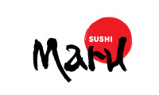
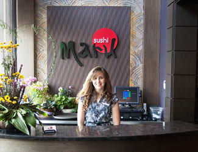

Pricing
Prices are determined by plate color, e.g. a yellow plate is $1.50.
- $1.50 - Yellow
- $2.25 - Light Blue
- $2.75 - Red
- $3.50 - Green
Categories
Items can span multiple categories, e.g. raw and spicy.
- Raw
- Vegetarian
- Spicy
Menu Items
Spiral Ecstasy Roll
- Yellow Plate
- Contains Raw Fish
- Shrimp, crab stick and avocado rolled with salmon, yellowtail and tuna
Big Tempura Maki
- Yellow Plate
- Shrimp, crab stick, chef’s choice of fish and avocado batter fried together and wrapped in rice and nori
Kanki By The Sea
- Light Blue Plate
- Eel and avocado rolled in crab stick and tobiko, served on a bed of seaweed salad with a cream sauce
Banzai Roll
- Light Blue Plate
- Contains Raw Fish
- Salmon, eel, octopus and avocado
Scallop Banzai Roll
- Red Plate
- Contains Raw Fish
- Salmon, eel, scallops and avocado
Tuna Rio
- Red Plate
- Spicy
- Shrimp tempura, cream cheese, and spicy mayo in a reverse roll with tuna, baked and topped with hot sauce and jalapeños

Sheila Maki
- Green Plate
- Spicy
- Butterfish, crab stick, avocado, masago and spicy mayo in a reverse roll layered with tempura drops and seasoned sweet soy
Volcano Roll
- Green Plate
- Spicy
- Crab stick, avocado and cream cheese rolled and covered with a unique spicy lava sauce
Contact
Have any questions, comments or concerns? Contact us here at Sushi Maru.
River Park Square 808 West Main Avenue Suite #105 Spokane, WA 99201 Phone (509) 455-3900 maruspokane@gmail.com
Map
Wanna visit Sushi Maru? Click the link below for a virtual map to find directions from your current location. Google Map of Sushi Maru